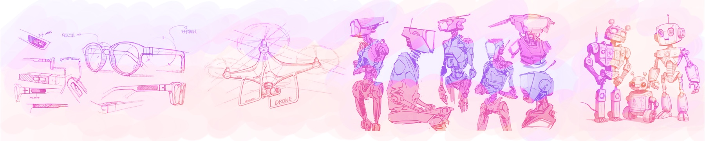
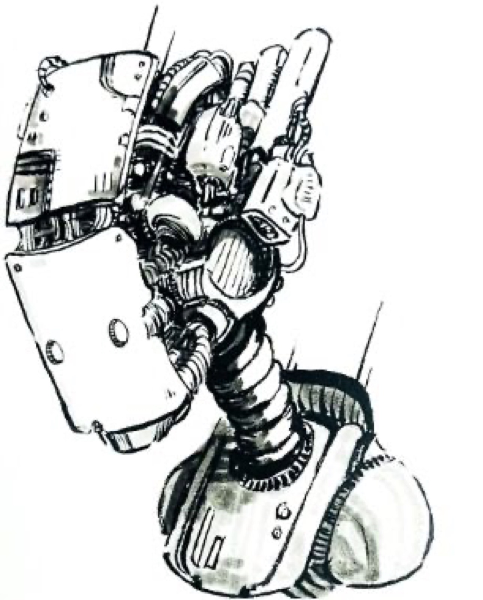
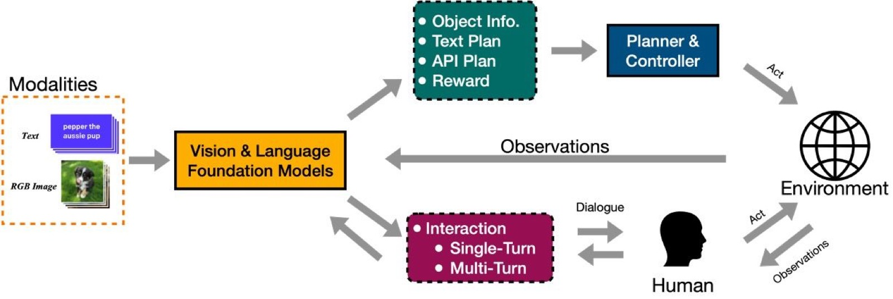
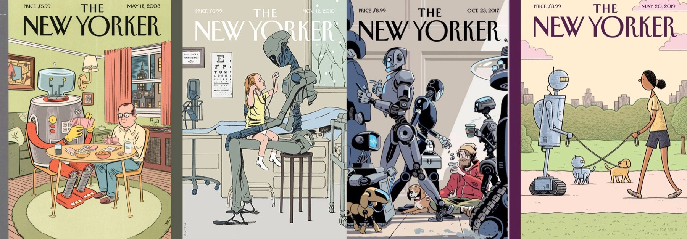
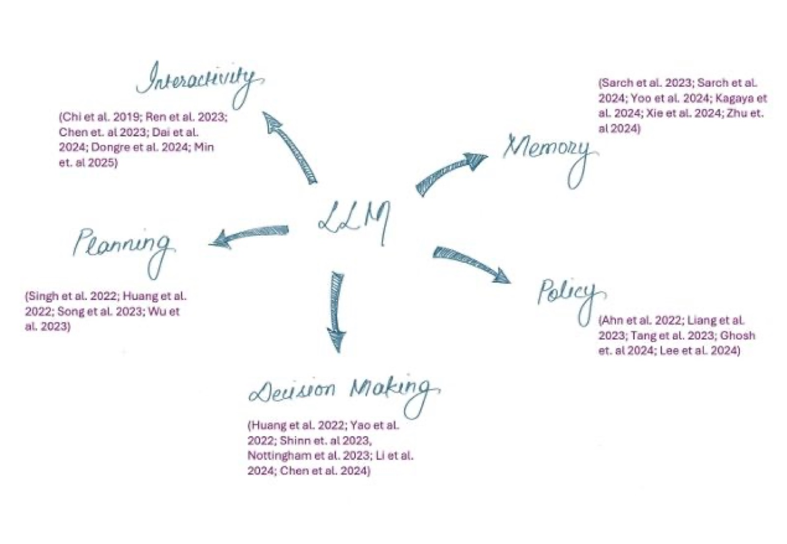
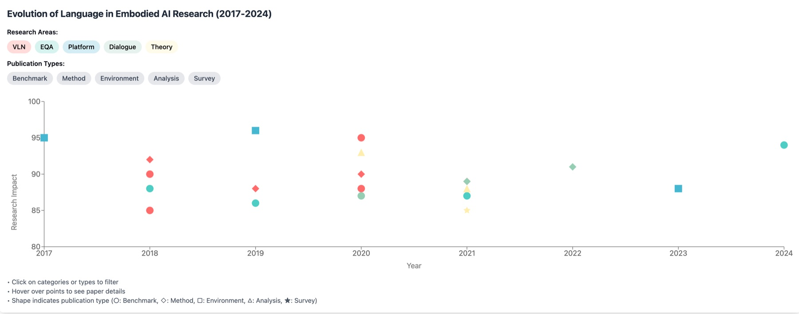
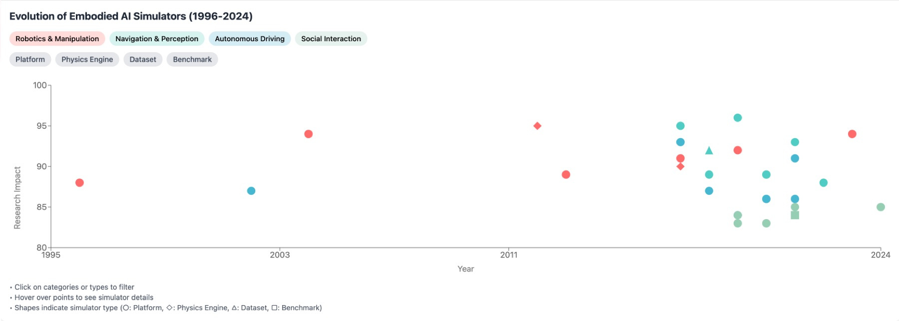
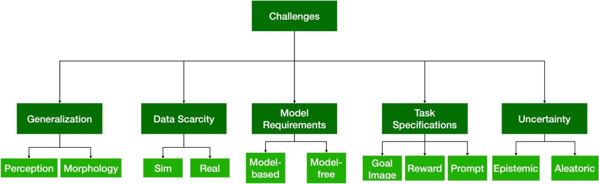
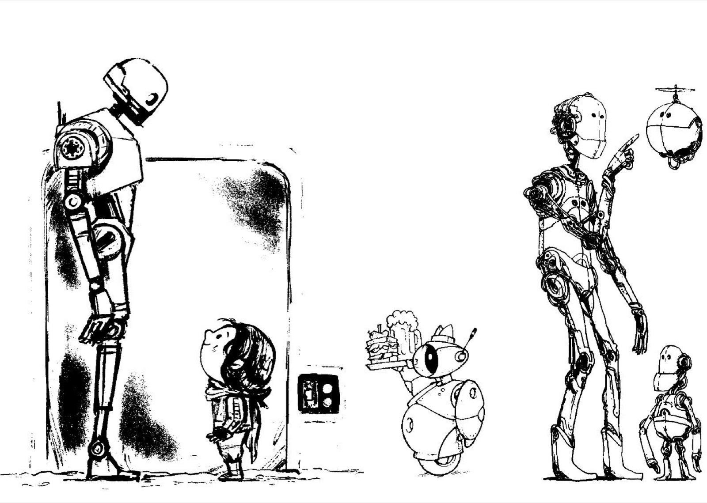

Embodied Conversational Agents and the Promise of Foundation Models
Reimagining Language in Embodied AI: Beyond Commands to Cognitive Partnership
In the rapidly evolving landscape of artificial intelligence (AI), we find ourselves at a pivotal moment where language capabilities and physical embodiment are poised to converge in unprecedented ways. While Large Language Models (LLMs) have revolutionized how machines process and generate language (OpenAI et al. 2024; Wei et al., 2022), a crucial frontier remains unconquered: the seamless integration of this linguistic prowess with physical embodiment. The vision of embodied conversational agents discussed in (Cassell et al. 2000) – can be extended to robots (Physical Embodiments) that can not only execute tasks in your environment but also engage in natural, contextually-grounded dialogue with their human partners – representing the next great challenge in AI.

Just as humans learn language through physical interaction with their environment, grounding words in actions, perceptions, and experiences, these future agents must bridge the gap between abstract language understanding and concrete physical reality. The recent advances in foundation models (Zhou, Ce, et al. 2024; Hu et al. 2024) have given us a glimpse of what's possible in language understanding, but the journey toward embodied agents that can naturally converse while navigating the physical world is just beginning. This intersection of language and embodiment isn't merely about functional communication (Hu et al. 2025) – giving and receiving instructions – but about creating agents that can engage in fluid, natural dialogue (Dongre et al. 2024), ask clarifying questions when uncertain (Singh et al. 2022; Ren et al. 2023; Min et al. 2025), and build shared understanding through interaction (Narayan-Chen et al. 2020; Bara et al. 2021). As we stand at this threshold, the challenge before us is clear: how do we move from today's largely disconnected language and robotics systems toward truly integrated agents that can participate in the kind of rich, grounded conversations that characterize human interaction?
The Promise of Foundation Models: A New Horizon
The quest for general-purpose robots—capable of seamlessly operating in diverse environments and performing an array of complex tasks—has long been an aspiration in robotics. While traditional methods have made significant strides, they face challenges in generalization, data scarcity, and adaptability. Enter foundation models, including LLMs and Vision-Language Models (VLMs), which are now emerging as transformative tools in this space (Hu et al. 2024). The advent of foundation models has dramatically reshaped our understanding of what's possible in human-machine communication. These models demonstrate remarkable capabilities in understanding context, maintaining coherent conversations, and even exhibiting common-sense reasoning. However, their knowledge remains largely disconnected from the physical world – they can discuss actions without truly understanding their physical implications or grounding them in real-world experience.

This disconnection highlights one of the central challenges in developing conversational embodied agents: bridging the gap between language understanding and physical reality. It's not enough for an agent to process language fluently; it must understand how words relate to actions, objects, and physical constraints. When a human says, “Could you help me organize these books?” the agent needs to understand not just the words, but the physical implications – recognizing books, understanding spatial relationships, and knowing the practical constraints of book arrangement.
A Case for Conversationality in Embodied Agents

The conversational abilities of embodied agents are critical for seamless interaction with humans. These agents leverage conversational AI to understand natural language commands, ask clarifying questions, and provide feedback. With the integration of LLMs, such as GPT and PaLM-E (Driess et al. 2023), embodied agents have become proficient at handling complex queries, generating human-like responses, and even engaging in multi-turn dialogues (Team Scotty bot, 2023). LLMs enhance these capabilities by improving contextual understanding, reasoning, and providing the ability to adapt to different conversational styles (see Figure 2). For example, an embodied agent in a home setting can ask a user about their preferences for cleaning or cooking tasks, explain its decisions, or even learn user-specific patterns over time. This synergy between conversational AI and embodied intelligence is changing the landscape of human-robot interaction, making robots more intuitive, accessible, and aligned with human needs.

Trends in EAI Research: Evolution of Resources & Themes in Language + Embodied AI
The progression of language in embodied AI (EAI) has followed a clear trajectory from simple instruction following to increasingly interactive scenarios (see Plot 1). At its foundation lies navigation, where systems learn to follow route instructions in both indoor and outdoor environments. What began with simple point-to-point navigation has evolved into open vocabulary manipulation task scenarios (Yenamandra et al. 2024) where agents must understand novel object references. Early benchmarks like R2R (Room-to-Room) and Room-Across-Room (Anderson et al. 2018; Ku et al. 2020) focused on single-turn navigation instructions, where agents learned to follow natural language directives in simulated environments. This evolved with datasets like ALFRED (Shridhar et al. 2020) and TOUCHDOWN (Chen et al. 2019) introducing more complex, multi-step task completion and outdoor navigation respectively. The field then saw a shift toward interactive scenarios with CVDN (Thomason et al. 2020) and TEACh (Padmakumar et al. 2021) introducing dialogue-based navigation and task completion, though these datasets remain limited in the depth and naturalness of their interactions.

The field has also ventured into more interactive domains through embodied question answering (EQA), where agents must actively explore their environment to answer queries (Singh et al.; Li et al.; Zhang et al. 2024). This has evolved from simple object-finding tasks to sophisticated scenarios requiring spatial reasoning, multi-target search, and even integration with external knowledge bases. The interaction patterns themselves have become increasingly sophisticated. While early systems relied on simple command-following, modern approaches incorporate clarification dialogue, error resolution, and help-seeking behaviors (Chi et al. 2019; Dai et al. 2024). This evolution reflects a deeper understanding that effective human-agent collaboration requires more than just executing instructions – it demands the ability to establish common ground, recognize uncertainty, and actively participate in joint problem-solving.
Learning from Simulation
Simulation environments have played a crucial role in this evolution – from AI2-THOR (Kolve et al. 2017) providing basic interaction capabilities to more sophisticated platforms like Habitat (Savva et al. 2019, Puig et al. 2023) enabling complex navigation and manipulation. Recent platforms like HumanTHOR (Wang et al. 2024) and Alexa Arena (Gao et al. 2023) are pushing toward more realistic human-robot collaboration scenarios.

AI2-THOR marked one of the first major simulation environments purpose-built for embodied AI research. It introduced photo-realistic indoor scenes with basic interaction capabilities – agents could navigate, manipulate objects, and perform simple actions. However, it had limitations in terms of physics simulation and object interaction fidelity. Habitat emerged as a game-changer, introducing significantly improved rendering speed and efficiency, crucial for training embodied AI agents. It enabled training at scale with photorealistic environments from real-world scans (Matterport3D) (Chang et al. 2017). VirtualHome (Puig et al. 2018) introduced programmatic representation of household activities, allowing for more complex task planning and execution. These environments began supporting more sophisticated interactions and better physics simulation.
Key evolution trends:
- Visual fidelity: from basic 3D rendering to photorealistic environments
- Interaction complexity: from simple navigation to complex manipulation
- Physics simulation: from basic collision detection to realistic object behavior
- Scale: from single rooms to entire buildings and outdoor spaces
- Human modeling: from static environments to dynamic human-agent interaction
Current systems still struggle with tasks that require delicate movements or long sequences of actions, and they sometimes misinterpret ambiguous instructions. Yet, despite these challenges, the progress is undeniable (Li et al. 2025). We're moving towards a future where robots won't just follow commands but will truly understand and collaborate with us in natural, intuitive ways.
Watch on the original post →
The Bridge That Needs to Be Built: Challenges and Future Directions
Language in embodied AI systems holds potential far beyond its current role of basic commands and task specifications. At its core, language can serve as a cognitive scaffold, enabling systems to build abstract representations of their experiences and generalize across situations – much like how humans use language to conceptualize and learn from their interactions with the physical world.

While we have robust datasets for instruction following and task completion, we lack large-scale, natural multi-turn dialogue datasets in embodied settings. Most existing dialogue datasets are either scripted or limited in scope, failing to capture the richness of natural human-agent interaction. Additionally, while simulation environments have grown more sophisticated, the gap between simulated and real-world interaction remains substantial. Another critical yet underexplored area is Theory of Mind (ToM)—the ability to attribute mental states such as beliefs, intentions, and desires to oneself and others to predict and interpret behavior (Premack & Woodruff 1978; Kosinski 2024). ToM is essential for collaborative problem-solving, yet most datasets focus on functional rather than truly interactive communication. Similarly, advanced turn-taking models remain underdeveloped, with most systems using simplistic silence-based approaches rather than the sophisticated predictive mechanisms humans employ to create natural conversational flow (Skantze & Irfan, 2025).
For EAI to achieve deeper human-agent collaboration, conversational agents must develop the ability to reason about the mental states, intentions, and knowledge of their human partners. This includes recognizing when a human might be confused, anticipating needs before they're explicitly stated, and adapting communication style based on the interaction context (İnan et al. 2025).

Self-awareness naturally extends into collaborative problem-solving, where language facilitates rich, bi-directional dialogue between humans and embodied agents, enabling them to clarify goals, propose alternatives, and explain reasoning processes. Finally, language serves as a natural conduit for knowledge transfer, allowing systems to learn directly from human expertise through natural instruction rather than programmed rules. Together, these functions of language – as cognitive scaffold, metacognitive tool, collaboration enabler, and learning interface – represent a fundamental shift from viewing language as merely an input/output mechanism to understanding it as an integral component of embodied intelligence.
Cite this article
@misc{embodiedconvai,
author = {Vardhan Dongre and Dilek Hakkani-T\"{u}r and Gokhan Tur},
title = {Embodied Conversational Agents and the Promise of Foundation Models},
howpublished = {\url{https://vardhandongre.com/notes/embodied-conversational-agents.html}},
year = {2025}
}Credits — art in this post by: CEED and Drew Wolf (cover art), WARPSoL, The New Yorker, Steve Armstrong, Mattias Adolfsson.
References
- Premack, D., & Woodruff, G. “Does the chimpanzee have a theory of mind?” 1978.
- Cassell et al. “Embodied Conversational Agents.” 2000.
- Kolve et al. “AI2-THOR: An Interactive 3D Environment for Visual AI.” 2017.
- Chang et al. “Matterport3D: Learning from RGB-D Data in Indoor Environments.” 2017.
- Anderson et al. “Vision-and-Language Navigation: Interpreting Visually-Grounded Navigation Instructions in Real Environments.” 2018.
- Das et al. “Embodied Question Answering.” 2018.
- Gordon et al. “IQA: Visual Question Answering in Interactive Environments.” 2018.
- Fried et al. “Speaker-Follower Models for Vision-and-Language Navigation.” 2018.
- Puig et al. “VirtualHome: Simulating Household Activities via Programs.” 2018.
- She et al. “Language to Action: Towards Interactive Task Learning.” 2018.
- Chen et al. “TOUCHDOWN: Natural Language Navigation and Spatial Reasoning in Visual Street Environments.” 2019.
- Yu et al. “Multi-Target Embodied Question Answering.” 2019.
- Nguyen et al. “Vision-and-Dialog Navigation.” 2019.
- Narayan-Chen et al. “Collaborative Dialogue in Minecraft.” 2019.
- de Vries et al. “Help Anna! Visual Navigation with Natural Multimodal Assistance.” 2019.
- Chi et al. “Just Ask: An Interactive Learning Framework for Vision and Language Navigation.” 2019.
- Ma et al. “Self-Monitoring Navigation Agent via Auxiliary Progress Estimation.” 2019.
- Ke et al. “Tactical Rewind: Self-Correction via Backtracking in Vision-And-Language Navigation.” 2019.
- Zhu et al. “Vision-Based Navigation With Language-Based Assistance via Imitation Learning.” 2019.
- Tan et al. “Learning to Navigate Unseen Environments: Back Translation with Environmental Dropout.” 2019.
- Chen et al. “Stay on the Path: Instruction Fidelity in Vision-and-Language Navigation.” 2019.
- Savva et al. “Habitat: A Platform for Embodied AI Research.” 2019.
- Ku et al. “Room-Across-Room: Multilingual Vision-and-Language Navigation with Dense Spatiotemporal Grounding.” 2020.
- Ilharco et al. “Beyond the Nav-Graph: Vision-and-Language Navigation in Continuous Environments.” 2020.
- Qi et al. “REVERIE: Remote Embodied Visual Referring Expression in Real Indoor Environments.” 2020.
- Nguyen et al. “Demand-Driven Navigation in 3D Indoor Environments.” 2020.
- Shridhar et al. “ALFRED: A Benchmark for Interpreting Grounded Instructions for Everyday Tasks.” 2020.
- Mishra et al. “ObjectGoal Navigation in Visual Environments.” 2020.
- Thomason et al. “CVDN: Cooperative Vision-and-Dialog Navigation.” 2020.
- Wijmans et al. “Embodied Question Answering in Photorealistic Environments with Point Cloud Perception.” 2020.
- Zhu et al. “RMM: A Recursive Mental Model for Dialog Navigation.” 2020.
- Hao et al. “Towards Learning a Generic Agent for Vision-and-Language Navigation via Pre-Training.” 2020.
- Hong et al. “VLN↻BERT: A Recurrent Vision-and-Language BERT for Navigation.” 2020.
- Zhu et al. “BabyWalk: Going Farther in Vision-and-Language Navigation by Taking Baby Steps.” 2020.
- Shridhar et al. “Learning to Execute Instructions in a Minecraft Dialogue.” 2020.
- Bisk et al. “Experience Grounds Language.” 2020.
- Zhu et al. “SOON: Scenario Oriented Object Navigation with Graph-Based Exploration.” 2021.
- Li et al. “BEHAVIOR: Benchmark for Everyday Household Activities in Virtual Interactive and Ecological Environments.” 2021.
- Park et al. “VideoNavQA: Bridging the Gap between Visual and Embodied Question Answering.” 2021.
- Roy et al. “K-EQA: Knowledge-Aware Embodied Question Answering.” 2021.
- Majumdar et al. “Embodied BERT: A Transformer Model for Embodied Language-guided Visual Task Completion.” 2021.
- Min et al. “FILM: Following Instructions in Language with Modular Methods.” 2021.
- Blukis et al. “A Persistent Spatial Semantic Representation for High-level Natural Language Instruction Execution.” 2021.
- Nguyen et al. “Look Wide and Interpret Twice: Improving Performance on Interactive Instruction-following Tasks.” 2021.
- Padmakumar et al. “TEACh: Task-driven Embodied Agents that Chat.” 2021.
- Wang et al. “History Aware Multimodal Transformer for Vision-and-Language Navigation.” 2021.
- Chen et al. “Vision-and-Language Navigation: A Survey and Taxonomy.” 2021.
- Thomason et al. “Core Challenges in Embodied Vision-Language Planning.” 2021.
- Nguyen et al. “NDH-Full: Learning and Evaluating Navigational Agents on Full-Length Dialogue.” 2021.
- Bara et al. “MindCraft: Theory of Mind Modeling for Situated Dialogue in Collaborative Tasks.” 2021.
- Wei et al. “Chain of thought prompting elicits reasoning in large language models.” NeurIPS 2022.
- Ahn et al. “Do As I Can, Not As I Say: Grounding Language in Robotic Affordances.” 2022.
- Gao et al. “DialFRED: Dialogue-Enabled Agents for Embodied Instruction Following.” 2022.
- Ma et al. “SQA3D: Situated Question Answering in 3D Scenes.” 2022.
- Chen et al. “JARVIS: A Neuro-Symbolic Commonsense Reasoning Framework for Conversational Embodied Agents.” 2022.
- Zhao et al. “One Step at a Time: Long-Horizon Vision-and-Language Navigation with Milestones.” 2022.
- Chen et al. “Vision-and-Language Navigation: A Survey of Tasks, Methods, and Future Directions.” 2022.
- Singh et al. “ProgPrompt: Generating Situated Robot Task Plans Using Large Language Models.” 2022.
- Chaplot et al. “Learning to Act with Affordance-Aware Multimodal Neural SLAM.” 2022.
- Shridhar et al. “Learning to Solve Voxel Building Embodied Tasks.” 2022.
- Singh et al. “Ask4Help: Learning to Leverage an Expert for Embodied Tasks.” 2022.
- Huang et al. “Language Models as Zero-Shot Planners: Extracting Actionable Knowledge for Embodied Agents.” 2022.
- Huang et al. “Inner Monologue: Embodied Reasoning through Planning with Language Models.” 2022.
- Ren et al. “Robots That Ask For Help: Uncertainty Alignment for Large Language Model Planners.” 2023.
- Zhang et al. “HoloAssist: An Egocentric Human Interaction Dataset for Interactive AI Assistants.” 2023.
- Mottaghi et al. “Alexa Arena: A User-Centric Interactive Platform for Embodied AI.” 2023.
- Gadre et al. “Moving Forward by Moving Backward: Embedding Action Impact over Action Semantics.” 2023.
- Liang et al. “Code as Policies: Language Model Programs for Embodied Control.” 2023.
- Song et al. “LLM-Planner: Few-Shot Grounded Planning for Embodied Agents with Large Language Models.” 2023.
- Shinn et al. “Reflexion: Language Agents with Verbal Reinforcement Learning.” 2023.
- Wu et al. “Embodied Task Planning with Large Language Models.” 2023.
- Zhang et al. “Digital Twin of Experience for Human-Robot Collaboration Through Virtual Reality.” 2023.
- Team ScottyBot. “ScottyBot: A Modular Embodied Dialogue Agent.” Alexa Prize SimBot Challenge, 2023.
- Hu et al. “Toward General-Purpose Robots via Foundation Models: A Survey and Meta-Analysis.” 2023.
- Ghorbani et al. “EmotionGesture: Audio-Driven Diverse Emotional Co-Speech 3D Gesture Generation.” 2023.
- Sarch et al. “Open-Ended Instructible Embodied Agents with Memory-Augmented Large Language Models.” 2023.
- Bisk et al. “What a Situated Language-Using Agent Must Be Able to Do.” 2023.
- Hu et al. “Dialogue Games for Benchmarking Language Understanding.” 2023.
- Chen et al. “Asking before acting: gather information in embodied decision-making with language models.” 2023.
- Gao et al. “Alexa Arena: A User-Centric Interactive Platform for Embodied AI.” 2023.
- Tang et al. “SayTap: Language to quadrupedal locomotion.” 2023.
- Nottingham et al. “Embodied Decision Making using Language Guided World Modeling.” 2023.
- Driess et al. “PaLM-E: An Embodied Multimodal Language Model.” 2023.
- Zhou, Ce, et al. “A comprehensive survey on pretrained foundation models: A history from BERT to ChatGPT.” International Journal of Machine Learning and Cybernetics (2024): 1–65.
- OpenAI et al. “GPT-4 Technical Report.” 2024.
- Wang et al. “Demonstrating HumanTHOR: A Simulation Platform and Benchmark for Human-Robot Collaboration in a Shared Workspace.” 2024.
- Ghosh et al. “Octo: An Open-Source Generalist Robot Policy.” 2024.
- Dai et al. “Think, Act, and Ask: Open-World Interactive Personalized Robot Navigation.” 2024.
- Singh et al. “OpenEQA: Embodied Question Answering in the Era of Foundation Models.” 2024.
- Li et al. “HM-EQA: A Benchmark for Human-Machine Embodied Question Answering.” 2024.
- Zhang et al. “S-EQA: Situated Embodied Question Answering.” 2024.
- Zhu et al. “Vision-Language Navigation with Embodied Intelligence: A Survey.” 2024.
- Zhang et al. “Limits of Theory of Mind Modelling in Dialogue-Based Collaborative Plan Acquisition.” 2024.
- Yoo et al. “Exploratory Retrieval-Augmented Planning For Continual Embodied Instruction Following.” 2024.
- Zhu et al. “Retrieval-Augmented Embodied Agents.” 2024.
- Xie et al. “Embodied-RAG: General Non-parametric Embodied Memory for Retrieval and Generation.” 2024.
- Sarch et al. “HELPER-X: A unified instructible embodied agent to tackle four interactive vision-language domains with memory-augmented language models.” 2024.
- Kagaya et al. “RAP: Retrieval-Augmented Planning with Contextual Memory for Multimodal LLM Agents.” 2024.
- Lee et al. “LLM-Based Offline Learning for Embodied Agents via Consistency-Guided Reward Ensemble.” 2024.
- Chen et al. “RoboGPT: an LLM-based Embodied Long-term Decision Making agent for Instruction Following Tasks.” 2024.
- Li et al. “Embodied Agent Interface: Benchmarking LLMs for Embodied Decision Making.” 2024.
- Yenamandra et al. “HomeRobot: Open-Vocabulary Mobile Manipulation.” 2024.
- Dongre et al. “ReSpAct: Harmonizing Reasoning, Speaking, and Acting; Towards Building Large Language Model-Based Conversational AI Agents.” 2024.
- Kosinski, M. “Evaluating large language models in theory of mind tasks.” 2024.
- İnan et al. “Better Slow than Sorry: Introducing Positive Friction for Reliable Dialogue Systems.” 2025.
- Li et al. “Embodied Agent Interface: Benchmarking LLMs for Embodied Decision Making.” 2025.
- Min et al. “Self-Regulation and Requesting Interventions.” 2025.
- Hu et al. “ELEGNT: Expressive and Functional Movement Design for Non-anthropomorphic Robot.” 2025.
- Skantze, G., & Irfan, B. “Applying General Turn-taking Models to Conversational Human-Robot Interaction.” 2025.